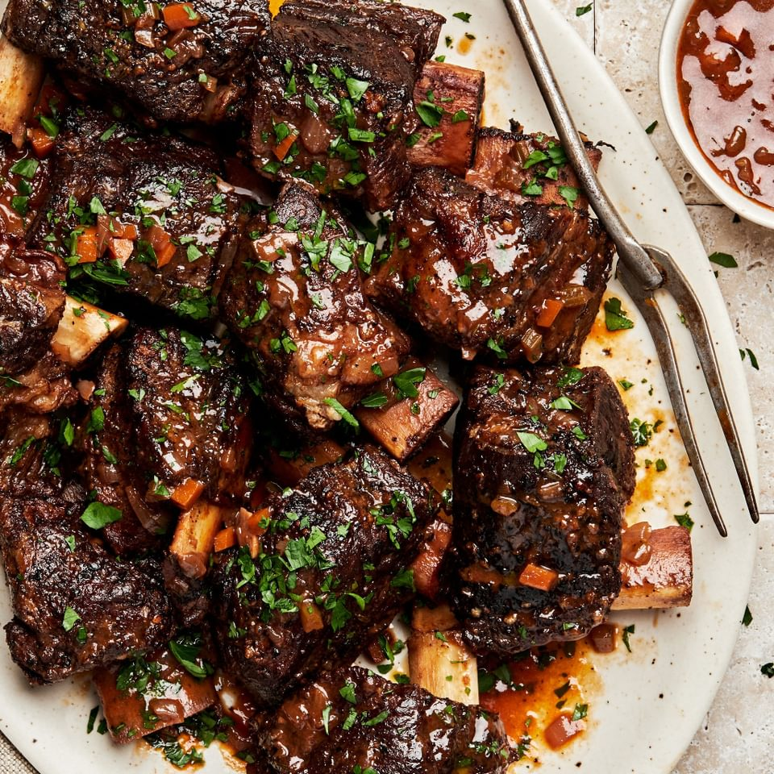

Short-Ribs

It was a cold Montana winter evening, I had just finished my shift at the coal
mine and was headed back home. I was walking up the stairs and opened my door
when all of a sudden I get hit with the most beautiful aroma I have ever smelled. My wife was making her famous
short ribs with mash patatos dish. We dont gate keep so that is why today I will be showing you how to make it.
Ingredients
- 1lbs of Short Ribs
- Instant Mash Patato Bag
- Tomato Paste
- Red Wine
- White Onion
- Garlic
- 2 Carrots
- Bone Broth
- Beef Bouillon
- Rosemary Sprig
- Thyme
- Olive Oil
Now that we have all the Ingredients lets start to cook. One thing that I did not add in the ingredients list
was a dutch oven. We will use the dutch oven to braise our short ribs and slow cook them.
Steps
- We will first cut as much fat as we can from the short ribs. Once that is done, put them to the side
- Put a 1/4 cups of olive oil into you dutch oven at high heat. Let the the dutch oven get hot
- Once its hot, place the short ribs bone up into the dutch oven. We will sear all side until we get a nice
dark color. Usually 1 minute per side
- Once all sides have been seard remove the meat and set aside
- Lower the heat to low 2, Cut your white onion in half and throw it in the dutch oven
- Mince your garlic and cut your carrots into medium size cubes and throw it in as well
- Add one cup of red wine into your dutch oven. We will scrape the buttom of the pan and get those
cripy bits flavor
- Add 3 tbs of tomato paste into the dutch oven and mix it in
- Add half a cup of bone broth into the dutch oven and mix it in
- Throw in your beef bouillon and mix it in
- Once all of the ingredients are in, go ahead and throw in your short ribs into the pot. We will let them
sit for 5 hours on low heat, place the lid and wait
- After 4 hrs open the lid and go ahead and throw some of the broth on top of your short Ribs
by now half the liquid should be gone and it should be a bit thick.
- Place the lid back on and wait another hour
- In the mean time go ahead and prep your instant mash patatos
- After the 5hrs have gone by remove the pot from the heat
- Your short ribs should be nice and tender, they should fall off the bone with ease
- Place a nice bed of mash patatos onto your plate
- Place 1-2 shor ribs onto top of the bed of mash patatos
- Drizzle some of the juice from the pot on top of the short ribs and mash patatos
- Enjoy
Return to main page